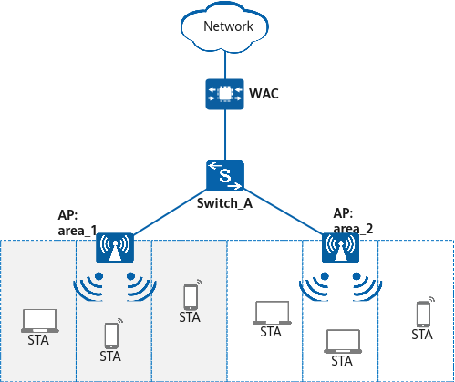

Example for Configuring Radio Calibration (Student Dormitory Scenarios)
Networking Requirements
AirEngine 5762-16W APs are deployed in a student dormitory building (a tube-shaped building) to provide wireless Internet access. Each AP covers three adjacent rooms and connects to the WAC through the access switch Switch_A.
For details about the basic networking example, see Configuration Examples for WLAN STA Management.

Data Planning
Item |
Data |
|---|---|
5 GHz radio profile |
|
2.4 GHz radio profile |
|
Air scan profile |
|
Configuration Roadmap
Configure radio calibration so that the WAC can automatically allocate proper operating channels to APs.
Precautions
When the AirEngine 5762-16W is configured, set the parameters as follows:
- 5 GHz frequency bandwidth: 80 MHz
- Interference threshold for a calibration group: –70 dBm
- TPC coverage threshold: –35 dBm
- Dynamic EDCA adjustment: enabled
You can use the preset scenario profile multi-partition-cross-room to enable the AP to automatically obtain the parameter settings that meet the preceding requirements.

When AirEngine 5762-16W APs are used to provide wireless coverage in a tube-shaped building scenario:
- If there is no bathroom at the door of a room, it is recommended that one AP be deployed to cover three adjacent rooms. The corridor is covered by the side lobe of the AP and therefore requires no additional AP.
- If there is a bathroom at the door of a room, the recommended plan is to use one AP to cover two adjacent rooms and deploy APs with omnidirectional antennas in the corridor at spacing of 25 m.
There are other network construction requirements and network planning constraints in this scenario. For details, see Scenario-based WLAN Planning Design for Education.
Procedure
- Check basic WLAN configurations.
Item
Command
Data
AP group to which an AP belongs
display ap all
AP group: ap-group1
All profiles bound to the AP group
display ap-group name ap-group1
VAP profile: wlan-net
Regulatory domain profile: domain1
All profiles bound to the VAP profile
display vap-profile name wlan-net
SSID profile: wlan-net
- Configure radio calibration.
# Bind the scenario profile multi-partition-cross-room to the AP group.
<WAC> system-view [WAC] wlan [WAC-wlan] ap-group name ap-group1 [WAC-wlan-ap-group-ap-group1] scene multi-partition-cross-room Warning: This action may cause service interruption. Continue?[Y/N]y
# Manually trigger radio calibration.
[WAC-wlan-ap-group-ap-group1] quit [WAC-wlan] calibrate manual startup Warning: The operation may cause business interruption, continue?[y/n]:y
- Verify the configuration.# Check the radio calibration effect on the WAC.
[WAC-wlan] display radio all CH/BW:Channel/Bandwidth CE:Current EIRP (dBm) ME:Max EIRP (dBm) CU:Channel utilization CCI/TX/RX/NF:Co-channel interference(%)/Transmit time ratio(%)/Receive time ratio(%)/Noise floor(dBm) ST:Status WM:Working mode (normal/monitor/monitor dual-band-scan/monitor proxy dual-band-scan) CMD:Shut down by a command ERR:Shut down due to an error CAL:Shut down due to radio calibration LPC:Shut down due to insufficient power supply 3GPP:Shut down due to 3GPP restrictions Total:4 --------------------------------------------------------------------------------------------------------------- AP ID Name RfID Band Type ST CH/BW CE/ME STA CU CCI/TX/RX/NF WM --------------------------------------------------------------------------------------------------------------- 1 area_2 0 2.4G 11ax on 1/20M 28/28 1 10% 30/0/0/-51 normal 1 area_2 1 5G 11ax on 149/80M 29/29 0 15% 30/0/0/-51 normal 0 area_1 0 2.4G 11ax on 6/20M 28/28 1 15% 30/0/0/-51 normal 0 area_1 1 5G 11ax on 153/80M 29/29 0 49% 30/0/0/-51 normal ---------------------------------------------------------------------------------------------------------------
# After calibration is completed, it is recommended that APs be configured to perform scheduled radio calibration in off-peak hours, for example, from 00:00 am to 06:00 am.
# The following configuration is not listed in the configuration script.[WAC-wlan] calibrate enable schedule time 03:00:00